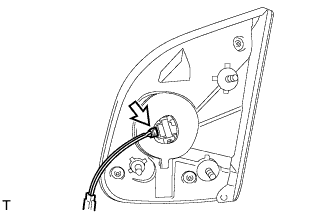
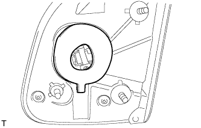

Rear Light Assembly LH Disassembly |
| 1. Remove Rear Light Socket & Wire |
 |
Disconnect the connector and remove the rear light socket & wire.
| 2. Remove Rear Light Gasket LH |
 |
Remove the rear light gasket LH.
| 3. Remove Rear Light Lens & Body LH |